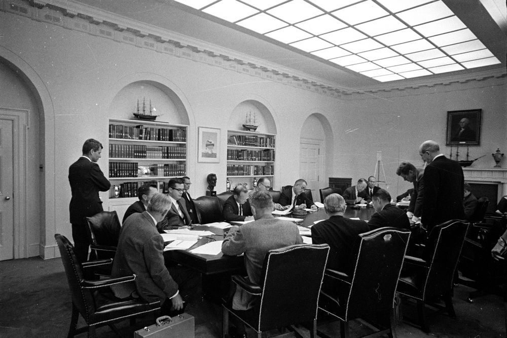

Directions: Fill in the chart as we study each stage of the crisis. Keep this page in your notebook. You will use it again on the review day before the unit test, and it is the record the writing task argues from.

| Stage | Date | What happened | What it risked | What it settled or built |
|---|---|---|---|---|
| Revolution | ||||
| Bay of Pigs | ||||
| Discovery | ||||
| Quarantine | ||||
| October 27 | ||||
| Settlement |
The two parts in one paragraph. Read down your chart to the settlement row. Explain in your own words why the settlement of October 28 had to have a public part and a secret part, and what each side could and could not have accepted if everything had been announced. Use at least three rows of the chart.
| Stage | Date | What happened | What it risked | What it settled or built |
|---|---|---|---|---|
| Revolution | January 1, 1959 | Castro overthrew Batista. Land reform and seizures struck American property, and the February 1960 trade agreement tied Cuba to the Soviet Union. | A Soviet ally ninety miles from Florida, and a break between Washington and Havana, complete by January 1961. | Nothing. It set the conditions the crisis grew from. |
| Bay of Pigs | April 1961 | About 1,400 Cuban exiles, trained and supplied by the United States, were defeated on the beach within three days. | It taught Castro to expect a larger invasion attempt and taught Khrushchev to read Kennedy as pushable. | Castro's case for a Soviet guarantee, which became the missile deployment. |
| Discovery | October 14, 1962 | A U-2 photograph showed Soviet medium range missile sites under construction near San Cristobal. Kennedy was told on October 16 and deliberated in secret for six days. | Missiles able to strike much of the eastern United States with little warning, completed before Washington decided. | The choice itself: air strike, invasion, or pressure at sea. |
| Quarantine | October 22 to 24, 1962 | Kennedy announced the discovery on October 22 and imposed the naval quarantine, in effect October 24. Some Soviet ships turned back at the line while site work sped up. | A shooting at sea, and an invasion if pressure failed. | Time. The quarantine held a step in reserve short of war while both sides bargained. |
| October 27 | October 27, 1962 | Khrushchev's second letter added the Turkey condition in public. A U-2 was shot down over Cuba, killing Major Anderson, and another strayed over Siberia. That night Robert Kennedy met Dobrynin in secret. | Events escaping both leaders, with each capital reading the other's accidents as orders. | The secret channel through which the Turkey assurance was given. |
| Settlement | October 28, 1962, and 1963 | Khrushchev announced the withdrawal. Publicly, missiles out for a no invasion pledge. Secretly, the Jupiter missiles left Turkey months later. | Exposure of the secret part, which both governments denied at the time. | The hotline and the Limited Test Ban Treaty, both in 1963. |
The two parts in one paragraph. Strong answers work from the alliance problem. The public part could be announced because it cost Kennedy nothing he had not already offered and gave Khrushchev a pledge he could show at home. The Turkey part could not be announced because the Jupiter deployment had been a NATO Council decision, and a public withdrawal under Soviet pressure would have read as trading an ally's security to end a crisis, damaging NATO and Kennedy's standing as its leader, as the Dobrynin cable records Robert Kennedy arguing that night. The paragraph earns full credit when it names who was protected by the secrecy, the alliance and both leaders' public positions, and not only that the trade was hidden.